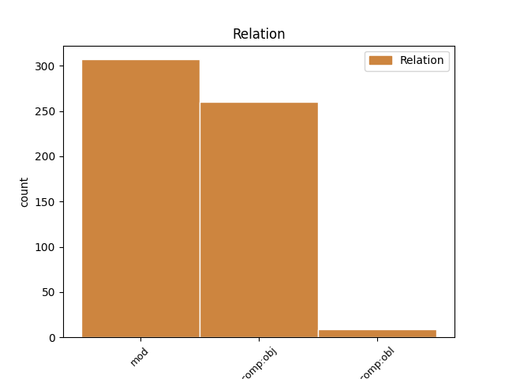
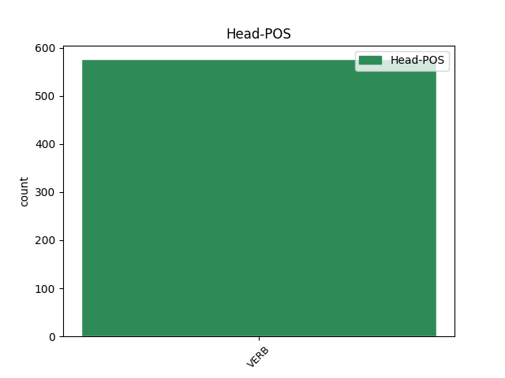
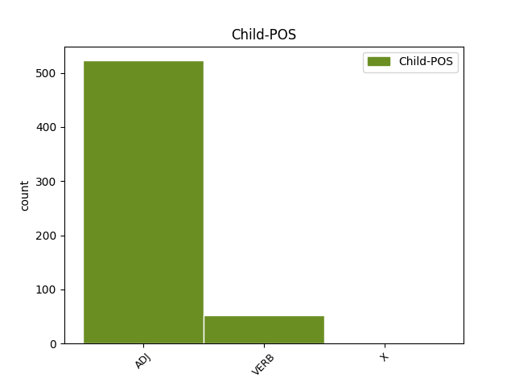

Distribution of features within this leaf



Agreement Rules sorted by frequency.
- When the dependent token is the modifer(mod) of the head token, and the head token is VERB and the dependent token is ADJ.
1 τίς _ _ _ _ 0 _ _ _
2 δ̓ _ _ _ _ 0 _ _ _
3 ἂν _ _ _ _ 0 _ _ _
4 φίλους φίλος ADJ a-p---ma- Case=Acc|Gender=Masc|Number=Plur 7 mod _ _
5 ὠνοῖτο _ _ _ _ 0 _ _ _
6 τοὺς _ _ _ _ 0 _ _ _
7 κεκτημένους κτέομαι VERB v-prpema- Aspect=Perf|Case=Acc|Gender=Masc|Number=Plur|Tense=Past|VerbForm=Part|Voice=Mid 0 _ _ _
8 ; _ _ _ _ 0 _ _ _
1 τὸν _ _ _ _ 0 _ _ _
2 πάνθ̓ πᾶς ADJ a-p---na- Case=Acc|Gender=Neut|Number=Plur 3 comp:obj _ _
3 ὁρῶντα ὁράω VERB v-sppama- Case=Acc|Gender=Masc|Number=Sing|Tense=Pres|VerbForm=Part|Voice=Act 0 _ _ _
4 φύλακ̓ _ _ _ _ 0 _ _ _
5 ἐπέστησεν _ _ _ _ 0 _ _ _
6 βοΐ _ _ _ _ 0 _ _ _
7 . _ _ _ _ 0 _ _ _
1 ἐπεὶ _ _ _ _ 0 _ _ _
2 δὲ _ _ _ _ 0 _ _ _
3 διὰ _ _ _ _ 0 _ _ _
4 τὸν _ _ _ _ 0 _ _ _
5 σεισμὸν _ _ _ _ 0 _ _ _
6 ἑώρων _ _ _ _ 0 _ _ _
7 τοὺς _ _ _ _ 0 _ _ _
8 πλείους _ _ _ _ 0 _ _ _
9 αὐτῶν _ _ _ _ 0 _ _ _
10 ἀπολωλότας _ _ _ _ 0 _ _ _
11 , _ _ _ _ 0 _ _ _
12 κατεφρόνησαν _ _ _ _ 0 _ _ _
13 τῶν _ _ _ _ 0 _ _ _
14 ἀπολελειμμένων ἀπολιμπάνω VERB v-prpemg- Aspect=Perf|Case=Gen|Gender=Masc|Number=Plur|Tense=Past|VerbForm=Part|Voice=Mid 0 _ _ _
15 , _ _ _ _ 0 _ _ _
16 ὀλίγων _ _ _ _ 0 _ _ _
17 ὄντων εἰμί VERB v-pppamg- Case=Gen|Gender=Masc|Number=Plur|Tense=Pres|VerbForm=Part|Voice=Act 14 mod _ SpaceAfter=No
18 . _ _ _ _ 0 _ _ _
1 Φοῖβος _ _ _ _ 0 _ _ _
2 γάρ _ _ _ _ 0 _ _ _
3 , _ _ _ _ 0 _ _ _
4 εἴ _ _ _ _ 0 _ _ _
5 τι _ _ _ _ 0 _ _ _
6 μὴ _ _ _ _ 0 _ _ _
7 κλύεις _ _ _ _ 0 _ _ _
8 τῶν _ _ _ _ 0 _ _ _
9 ἀγγέλων _ _ _ _ 0 _ _ _
10 , _ _ _ _ 0 _ _ _
11 πέμψασιν _ _ _ _ 0 _ _ _
12 ἡμῖν _ _ _ _ 0 _ _ _
13 ἀντέπεμψεν _ _ _ _ 0 _ _ _
14 , _ _ _ _ 0 _ _ _
15 ἔκλυσιν _ _ _ _ 0 _ _ _
16 μόνην _ _ _ _ 0 _ _ _
17 ἂν _ _ _ _ 0 _ _ _
18 ἐλθεῖν _ _ _ _ 0 _ _ _
19 τοῦδε _ _ _ _ 0 _ _ _
20 τοῦ _ _ _ _ 0 _ _ _
21 νοσήματος _ _ _ _ 0 _ _ _
22 , _ _ _ _ 0 _ _ _
23 εἰ _ _ _ _ 0 _ _ _
24 τοὺς _ _ _ _ 0 _ _ _
25 κτανόντας κτείνω VERB v-papama- Case=Acc|Gender=Masc|Number=Plur|Tense=Past|VerbForm=Part|Voice=Act 0 _ _ _
26 Λάϊον Λάιος X --s---ma- Case=Acc|Gender=Masc|Number=Sing 25 comp:obj _ _
27 μαθόντες _ _ _ _ 0 _ _ _
28 εὖ _ _ _ _ 0 _ _ _
29 κτείναιμεν _ _ _ _ 0 _ _ _
30 ἢ _ _ _ _ 0 _ _ _
31 γῆς _ _ _ _ 0 _ _ _
32 φυγάδας _ _ _ _ 0 _ _ _
33 ἐκπεμψαίμεθα _ _ _ _ 0 _ _ _
34 . _ _ _ _ 0 _ _ _
1 ὃ _ _ _ _ 0 _ _ _
2 δὲ _ _ _ _ 0 _ _ _
3 εἶπε _ _ _ _ 0 _ _ _
4 ὦ _ _ _ _ 0 _ _ _
5 Κροῖσε _ _ _ _ 0 _ _ _
6 , _ _ _ _ 0 _ _ _
7 ἐπιστάμενόν ἐπιστάζω VERB v-sfpmma- Case=Acc|Gender=Masc|Number=Sing|Tense=Fut|VerbForm=Part|Voice=Mid 0 _ _ _
8 με _ _ _ _ 0 _ _ _
9 τὸ _ _ _ _ 0 _ _ _
10 θεῖον _ _ _ _ 0 _ _ _
11 πᾶν _ _ _ _ 0 _ _ _
12 ἐὸν εἰμί VERB v-sppana- Case=Acc|Gender=Neut|Number=Sing|Tense=Pres|VerbForm=Part|Voice=Act 7 comp:obj _ _
13 φθονερόν _ _ _ _ 0 _ _ _
14 τε _ _ _ _ 0 _ _ _
15 καὶ _ _ _ _ 0 _ _ _
16 ταραχῶδες _ _ _ _ 0 _ _ _
17 ἐπειρωτᾷς _ _ _ _ 0 _ _ _
18 ἀνθρωπηίων _ _ _ _ 0 _ _ _
19 πρηγμάτων _ _ _ _ 0 _ _ _
20 πέρι _ _ _ _ 0 _ _ _
21 . _ _ _ _ 0 _ _ _
Disagree Examples:
1 ὅστις _ _ _ _ 0 _ _ _
2 δ̓ _ _ _ _ 0 _ _ _
3 Ἔρωτα _ _ _ _ 0 _ _ _
4 μὴ _ _ _ _ 0 _ _ _
5 μέγαν _ _ _ _ 0 _ _ _
6 κρίνει _ _ _ _ 0 _ _ _
7 θεόν _ _ _ _ 0 _ _ _
8 , _ _ _ _ 0 _ _ _
9 ἢ _ _ _ _ 0 _ _ _
10 σκαιός _ _ _ _ 0 _ _ _
11 ἐστιν _ _ _ _ 0 _ _ _
12 ἢ _ _ _ _ 0 _ _ _
13 καλῶν καλός ADJ a-p---ng- Case=Gen|Gender=Neut|Number=Plur 15 mod _ _
14 ἄπειρος _ _ _ _ 0 _ _ _
15 ὢν εἰμί VERB v-sppamn- Case=Nom|Gender=Masc|Number=Sing|Tense=Pres|VerbForm=Part|Voice=Act 0 _ _ _
16 οὐκ _ _ _ _ 0 _ _ _
17 οἶδε _ _ _ _ 0 _ _ _
18 τὸν _ _ _ _ 0 _ _ _
19 μέγιστον _ _ _ _ 0 _ _ _
20 ἀνθρώποις _ _ _ _ 0 _ _ _
21 θεόν _ _ _ _ 0 _ _ _
22 . _ _ _ _ 0 _ _ _
1 ὃν _ _ _ _ 0 _ _ _
2 ὁ _ _ _ _ 0 _ _ _
3 σοφὸς _ _ _ _ 0 _ _ _
4 ὑμνῶν ὑμνέω VERB v-sppamn- Case=Nom|Gender=Masc|Number=Sing|Tense=Pres|VerbForm=Part|Voice=Act 0 _ _ _
5 αἰεί _ _ _ _ 0 _ _ _
6 ποτε _ _ _ _ 0 _ _ _
7 Ἀνακρέων _ _ _ _ 0 _ _ _
8 πᾶσίν πᾶς ADJ a-p---md- Case=Dat|Gender=Masc|Number=Plur 4 comp:obl _ _
9 ἐστιν _ _ _ _ 0 _ _ _
10 διὰ _ _ _ _ 0 _ _ _
11 στόματος _ _ _ _ 0 _ _ _
12 . _ _ _ _ 0 _ _ _
1 ἔχρησεν _ _ _ _ 0 _ _ _
2 δὲ _ _ _ _ 0 _ _ _
3 καὶ _ _ _ _ 0 _ _ _
4 περὶ _ _ _ _ 0 _ _ _
5 τῶν _ _ _ _ 0 _ _ _
6 ἀμφὶ _ _ _ _ 0 _ _ _
7 τὸν _ _ _ _ 0 _ _ _
8 Χαρίτωνα _ _ _ _ 0 _ _ _
9 , _ _ _ _ 0 _ _ _
10 προτάξας προτάσσω VERB v-sapamn- Case=Nom|Gender=Masc|Number=Sing|Tense=Past|VerbForm=Part|Voice=Act 0 _ _ _
11 τοῦ _ _ _ _ 0 _ _ _
12 ἑξαμέτρου ἑξάμετρος ADJ a-s---ng- Case=Gen|Gender=Neut|Number=Sing 10 comp:obj _ _
13 τὸ _ _ _ _ 0 _ _ _
14 πεντάμετρον _ _ _ _ 0 _ _ _
15 , _ _ _ _ 0 _ _ _
16 καθάπερ _ _ _ _ 0 _ _ _
17 ὕστερον _ _ _ _ 0 _ _ _
18 καὶ _ _ _ _ 0 _ _ _
19 Διονύσιος _ _ _ _ 0 _ _ _
20 ὁ _ _ _ _ 0 _ _ _
21 Ἀθηναῖος _ _ _ _ 0 _ _ _
22 ἐποίησε _ _ _ _ 0 _ _ _
23 ὁ _ _ _ _ 0 _ _ _
24 ἐπικληθεὶς _ _ _ _ 0 _ _ _
25 Χαλκοῦς _ _ _ _ 0 _ _ _
26 ἐν _ _ _ _ 0 _ _ _
27 τοῖς _ _ _ _ 0 _ _ _
28 Ἐλεγείοις _ _ _ _ 0 _ _ _
29 . _ _ _ _ 0 _ _ _
1 ἔχρησεν _ _ _ _ 0 _ _ _
2 δὲ _ _ _ _ 0 _ _ _
3 καὶ _ _ _ _ 0 _ _ _
4 περὶ _ _ _ _ 0 _ _ _
5 τῶν _ _ _ _ 0 _ _ _
6 ἀμφὶ _ _ _ _ 0 _ _ _
7 τὸν _ _ _ _ 0 _ _ _
8 Χαρίτωνα _ _ _ _ 0 _ _ _
9 , _ _ _ _ 0 _ _ _
10 προτάξας προτάσσω VERB v-sapamn- Case=Nom|Gender=Masc|Number=Sing|Tense=Past|VerbForm=Part|Voice=Act 0 _ _ _
11 τοῦ _ _ _ _ 0 _ _ _
12 ἑξαμέτρου _ _ _ _ 0 _ _ _
13 τὸ _ _ _ _ 0 _ _ _
14 πεντάμετρον πεντάμετρος ADJ a-s---na- Case=Acc|Gender=Neut|Number=Sing 10 comp:obj _ SpaceAfter=No
15 , _ _ _ _ 0 _ _ _
16 καθάπερ _ _ _ _ 0 _ _ _
17 ὕστερον _ _ _ _ 0 _ _ _
18 καὶ _ _ _ _ 0 _ _ _
19 Διονύσιος _ _ _ _ 0 _ _ _
20 ὁ _ _ _ _ 0 _ _ _
21 Ἀθηναῖος _ _ _ _ 0 _ _ _
22 ἐποίησε _ _ _ _ 0 _ _ _
23 ὁ _ _ _ _ 0 _ _ _
24 ἐπικληθεὶς _ _ _ _ 0 _ _ _
25 Χαλκοῦς _ _ _ _ 0 _ _ _
26 ἐν _ _ _ _ 0 _ _ _
27 τοῖς _ _ _ _ 0 _ _ _
28 Ἐλεγείοις _ _ _ _ 0 _ _ _
29 . _ _ _ _ 0 _ _ _
1 ἔτι _ _ _ _ 0 _ _ _
2 πολὺ πολύς ADJ a-s---na- Case=Acc|Gender=Neut|Number=Sing 4 mod _ _
3 μᾶλλον _ _ _ _ 0 _ _ _
4 ἐρυθριάσαντος ἐρυθριάω VERB v-sapamg- Case=Gen|Gender=Masc|Number=Sing|Tense=Past|VerbForm=Part|Voice=Act 0 _ _ _
5 τοῦ _ _ _ _ 0 _ _ _
6 παιδὸς _ _ _ _ 0 _ _ _
7 εἶπε _ _ _ _ 0 _ _ _
8 πρὸς _ _ _ _ 0 _ _ _
9 τὸν _ _ _ _ 0 _ _ _
10 συγκατακείμενον _ _ _ _ 0 _ _ _
11 · _ _ _ _ 0 _ _ _